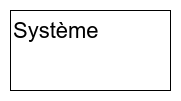
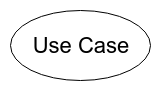
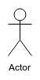
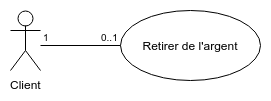
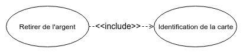
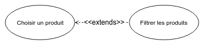
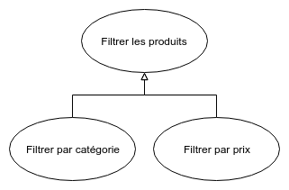
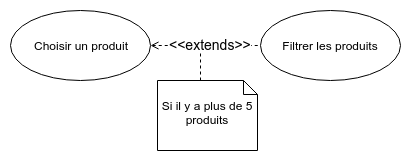

Diagramme de cas d'utilisation
Catégorie : comportement
Définition
UseCases are a means to capture the requirements of systems, i.e., what systems are supposed to do.
- Object Management Group
Les diagrammes de cas d'utilisation sont des diagrammes UML utilisés pour donner une vision globale du comportement fonctionnel d'un système logiciel.
- Wikipedia
Définition
- Diagramme de comportement de haut niveau
- Définir l’ensemble des cas d’utilisation du système
- Permettre l’identification des interactions entre le système et les acteurs.
- Permettre le bornage du système
Principaux éléments graphiques
| Nom |
Représentation |
Description |
| Frame |
 |
Elément permettant d'identifier un diagramme par son label. |
| System Boundary |
 |
Permet de délimiter le système. |
| Use Case |
 |
Représente un cas d'utilisation.
|
| Actor |
 |
Représente une entité physique ou bien un rôle participant au cas d'utilisation.
|
Principaux éléments graphiques
| Nom |
Représentation |
Description |
| Association |
 |
Permet d'identifier les liens entre un acteur et un cas d'utilisation. Il est possible d'y ajouter des cardinalités. |
| Include |
 |
Permet d'inclure un autre cas d'utilisation. |
| Extends |
 |
Permet d'étendre un autre cas d'utilisation. Ajoute des fonctionnalités optionnelles. |
Principaux éléments graphiques
| Nom |
Représentation |
Description |
| Generalization |
 |
Permet à un enfant d'hériter du comportement d'un parent. |
| Note |
 |
Permet d'ajouter une note sur des associations. |
Description
Le cas d’utilisation peut-être doublé d’une description textuelle qui précise sa description :
- Nom
- Objectif
- Acteurs principaux & secondaires
- Les pré-conditions (déclencheur de l’action)
- Les post-conditions (déclencheur de la fin de l’action)
- Séquencement des messages échangés
- Séquences alternatives et des exceptions
Exercices
La société WineTour organise des journées de dégustation de vin en bus dans différentes villes de France.
Après avoir échangé sur les besoins de cette société, vous souhaitez réalisez un diagramme de cas d'utilisation répondant aux demandes suivantes :
- Un trajet en bus comprend plusieurs passagers et un guide
- Le guide sera chargé d'effectuer des enregistrements groupés pour l'ensemble des clients
- Certains clients peuvent aussi choisir d'effectuer eux-même l'enregistrement (individuellement)
- Les passagers pourront éventuellement enregistrer un ou plusieurs bagages
Exercices
Un aéroport souhaite mettre en place un système de réservation de billet d'avion en ligne.
Après avoir échangé sur les besoins de cette société, vous souhaitez réalisez un diagramme de cas d'utilisation répondant aux demandes suivantes :
- Un client doit pouvoir effectuer une réservation en ligne et choisir également le nombre de places qu'il souhaite réserver
- A la suite d'une réservation, un client doit pouvoir effectuer une demande de modification. Cette demande sera validée ou non par la compagnie aérienne.
- A la suite d'une réservation, un client doit pouvoir effectuer une demande de remboursement si le vol est annulé. Cette demande sera validée ou non par la compagnie aérienne.